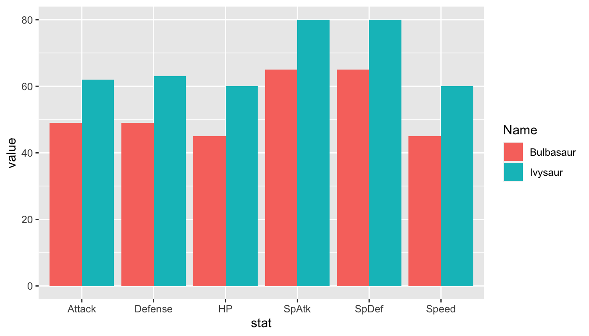

library(tidyverse)
atp_df <- read_csv("data/atp_matches_2019.csv")
wta_df <- read_csv("data/wta_matches_2019.csv")
both_df <- bind_rows(atp_df, wta_df)
both_long <- both_df |> pivot_longer(c(winner_name, loser_name))
## only keep players who have player over 50 matches
both_n50 <- both_long |> group_by(value) |> count() |>
filter(n > 50)
## construct various statistics
major_tennis <- semi_join(both_long, both_n50, by = c("value"))
major_tennis <- major_tennis |> mutate(w_svperc = 100 * w_1stIn / w_svpt,
l_svperc = 100 * l_1stIn / l_svpt,
w_firstwon = 100 * w_1stWon / w_1stIn,
l_firstwon = 100 * l_1stWon / l_1stIn,
w_secondwon = 100 * w_2ndWon / (w_svpt - w_1stIn),
l_secondwon = 100 * l_2ndWon / (l_svpt - l_1stIn))15 Shiny Reactivity
Working with shiny can be difficult at first because we need to think about how code is run a bit differently. In .rmd, .qmd, and .R files, code is run from beginning to end. This makes debugging relatively simple: we run code line by line until we get an error. Then, we try to understand why the code gives an error.
On the other hand, code in a shiny app does not run from beginning to end. Instead, code is run through a process called reactive execution. We will explore this concept by making reactive graphs. We will begin this section with a reading from the Mastering Shiny book and then delve into more examples.
15.1 Basic Reactivity (Class Prep)
Read Sections 3.1 through 3.3 in the Basic Reactivity Chapter of Mastering Shiny
Exercise 1. 3.3.6 Exercise 1 in Mastering Shiny.
Exercise 2. 3.3.6 Exercise 2 in Mastering Shiny.
In Wickham’s Mastering Shiny book, there are a couple of sections on reactive graphs, which help conceptualize how shiny runs code. Read Section 3.4: the Basic Reactivity Chapter of Mastering Shiny, and complete the following.
Exercise 3. Sketch a reactive graph for the majors app in the previous section. Make sure to include all inputs, outputs, and reactive expressions in your graph. Instead of submitting this exercise, bring your sketch to class.
15.2 Another Example Tennis App
The purpose of this section is to complete another example with a different data set, continuing to strengthen our conceptual understanding of reactivity. We will use a couple of tennis data sets to create an app that lets us create a histogram of a summary statistic of our choosing for a player of our choosing. Constructing this app will cover another common use case: allowing a user to choose a variable from a data set to plot.
Again, a usual first step is creating a static graph, choosing a value for each future interactive input. Begin by reading in the data and doing a bit of preparatory work. To focus on shiny, we will skip discussion of this work, but all of it are functions you should recognize.
The next chunk of code is needed to put the various statistics into one column. This is an issue because, in major_tennis, there is a column for w_ace (aces for the winner) and l_ace (aces for the loser). We need those in one column, aces, that have the number of aces for the player. Looking back, this is not the most efficient way we could do this. If we were to do it again, we could do an across() combined with if_else() where the new variables would take the w_.... values if the player was the winner and the l_.... values if the player was the loser.
major_tennis_w <- major_tennis |> filter(name == "winner_name")
major_tennis_l <- major_tennis |> filter(name == "loser_name")
w_small <- major_tennis_w |> select(value, winner_seed, w_ace, w_df,
w_svperc, w_firstwon, w_secondwon) |>
rename(seed = winner_seed, ace = w_ace, df = w_df, svperc = w_svperc,
firstwon = w_firstwon, secondwon = w_secondwon)
l_small <- major_tennis_l |> select(value, loser_seed, l_ace, l_df,
l_svperc, l_firstwon, l_secondwon) |>
rename(seed = loser_seed, ace = l_ace, df = l_df, svperc = l_svperc,
firstwon = l_firstwon, secondwon = l_secondwon)
df <- bind_rows(w_small, l_small) |>
rename(player = "value")
df
#> # A tibble: 3,600 × 7
#> player seed ace df svperc firstwon secondwon
#> <chr> <chr> <dbl> <dbl> <dbl> <dbl> <dbl>
#> 1 Daniil Medvedev 4 10 1 63.5 84.8 73.7
#> 2 Jo-Wilfried Tsonga <NA> 12 2 63.2 79.1 60
#> 3 Daniil Medvedev 4 12 3 64.8 70.6 67.6
#> 4 Jeremy Chardy <NA> 10 8 61.7 75.9 50
#> 5 Jo-Wilfried Tsonga <NA> 11 3 57.8 81.1 40.7
#> 6 Alex De Minaur 7 1 1 77.6 76.3 72.7
#> # ℹ 3,594 more rowsNow, we have our five variables (ace, df, svperc, firstwon, and secondwon). We want an app that lets that user make a histogram of one of these variables for a player of their choosing.
We will try to use a similar workflow for this problem as we did for the majors app.
Step 1: Make a histogram of one variable for one specific player.
Step 2: Set up our shiny app inputs. Before, we just had a single input. Now, we will have two: one for player and one for variable. Let’s focus on one at a time, doing player first. Type shinyapp and click on the R Studio snippet to bring up a base app.
Step 3: Now that we have one of our inputs in the UI, let’s work on the server. First, we will ignore the input$ selector and put in our graph of aces for Medvedev. We again use the plotOutput(), renderPlot({}) combination.
Step 4: Now we want to connect the input defined in the UI to the server so that the graph changes depending on which player we select.
Step 5: Now we repeat some of these steps for a second input: a variable that the user selects. We will use radioButtons() as the input in the UI.
We will discuss why we need to take some extra steps to perform the “user can select a variable” operation in class. In particular, we will need to briefly discuss tidy evaluation to use some of the tidyverse functions in shiny.
Step 6: Finally, we will add a third input that will let the user change the number of bins in the histogram.
Exercise 1. If we move the output$name_of_histogram <- .... code to the very beginning of the server functino, do you think the app will still run? Give a reason.
Exercise 2. Draw the reactive graph for the Tennis app.
15.3 Your Turn
Exercise 1. In the tennis app, change the histogram input from a sliderInput() to a numericInput().
Exercise 2. In the tennis app, change the histogram input back to sliderinput(). Then, apply 2.2.8 Exercise 3 in the Mastering Shiny book to the tennis app slider.
Exercise 3. Add an additional input or output (or both!) to the Tennis App. You can decide what you want to add here!
15.4 Other Useful Things for shiny
15.4.1 glue::glue()
The glue() function from the glue package is really useful for making plot titles, axis titles, etc. that depend on variables you have made. For example, you might want a title for ggplot2 to change depending on which input a user selects.
It’s a fairly simple function: you just put together text in " " and variable names, separated by commas.
poke_df <- read_csv("data/pokemon_full.csv")
poke_long <- poke_df %>% pivot_longer(4:9, values_to = "value",
names_to = "stat")
poke_small <- poke_long %>% filter(Name == "Bulbasaur" | Name == "Ivysaur")
ggplot(data = poke_small, aes(x = stat, y = value)) +
geom_col(aes(fill = Name), position = "dodge")
library(shiny)
ui <- fluidPage(
sidebarLayout(
sidebarPanel(
selectizeInput("pokechoose1", label = "Choose Pokemon",
choices = poke_df$Name, selected = "Bulbasaur")
),
mainPanel(
plotOutput(outputId = "pokegraph")
)
)
)
server <- function(input, output, session) {
output$pokegraph <- renderPlot({
poke_react <- poke_long %>% filter(Name %in% input$pokechoose1)
ggplot(data = poke_react, aes(x = stat, y = value)) +
geom_point() +
geom_segment(aes(xend = stat, y = 0, yend = value)) +
coord_flip() +
labs(title = glue::glue("Graph of the Stats for", input$pokechoose1))
})
}
shinyApp(ui, server)Shiny applications not supported in static R Markdown documents
15.4.3 Using if and else
If we want our app do do something completely different when a user changes an input, we might consider using if and else. If we have time in class, we will do an example in Shiny: if an input is equal to some value, do something or make a certain plot; else make a different type of plot. Below is an example of the syntax in base R:
x <- 5
if (x < 10) {
x * 2
} else {
x / 2
}
#> [1] 10
15.4.4 source() and write_csv()
Important
For shiny apps, if there is a lot of data preparation before the data is ready for the shiny app, it is generally best to put this data preparation in a different R script.
You can then either source() the data preparation file (which runs all of the code in the file that is sourced) or you can use write_csv() to write the prepped data to its own .csv file. You would then use read_csv() on this new file in the app.R file with your shiny app.